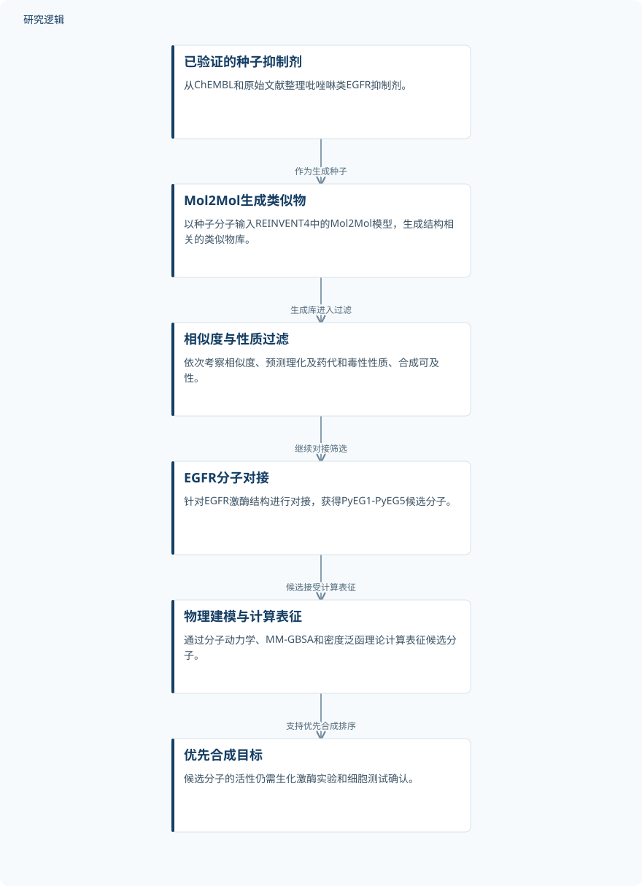

摘要解读
基于吡唑啉的EGFR激酶抑制剂候选物生成式设计与计算表征
Generative design and computational characterization of pyrazoline-based EGFR kinase inhibitor candidates.
解读更新 2026-11-10 11:10 · 依据公开摘要整理，未核验全文细节
生成式模型能否为EGFR抑制剂筛出值得合成的候选分子？这项研究将分子生成与物理建模串联，用计算证据为吡唑啉类似物排序；其阅读价值在于理解候选筛选逻辑，而非获得已验证的抗癌药物结论。
文章目录
从已知吡唑啉骨架出发寻找EGFR候选物
表皮生长因子受体（EGFR）是乳腺癌、结直肠癌和非小细胞肺癌中的成熟治疗靶点，含吡唑啉骨架的化合物也已有EGFR抑制活性报道。本研究针对EGFR激酶的ATP结合位点，尝试在已有活性分子的结构基础上生成类似物，再通过计算筛选缩小候选范围。
分子生成之后，逐级加入性质与结合筛选
研究从ChEMBL和原始文献整理了50个经实验验证的吡唑啉类EGFR抑制剂，作为REINVENT4中Mol2Mol模型的种子，生成结构相关的类似物库。随后依次按与种子活性分子的Tanimoto相似度≥0.6、预测理化及药代和毒性性质、合成可及性评分SA <6，以及分子对接进行过滤。
对接使用EGFR激酶结构PDB 5U8L，流程经自对接验证，重对接RMSD为1.342 Å。研究还通过分子动力学、MM-GBSA端点计算及B3LYP/6-31G(d)密度泛函理论计算，分别考察复合物稳定性、结合自由能和分子电子性质。
依据摘要整理的候选分子筛选过程


概括摘要明确报告的生成、筛选与计算表征关系；这是摘要示意图，不是论文原图，也不表示候选活性已获实验确认。
下载 SVG图示关系说明
实线表示相邻阶段的信息流，虚线表示跨阶段联系或反馈。
已验证的种子抑制剂 → Mol2Mol生成类似物：作为生成种子；Mol2Mol生成类似物 → 相似度与性质过滤：生成库进入过滤；相似度与性质过滤 → EGFR分子对接：继续对接筛选；EGFR分子对接 → 物理建模与计算表征：候选接受计算表征；物理建模与计算表征 → 优先合成目标：支持优先合成排序
候选分子获得多类计算支持，但指标各有侧重
PyEG1-PyEG5的对接评分为-9.5至-10.6 kcal/mol，优于重对接原配体的-9.2 kcal/mol。在100 ns分子动力学模拟中，这些复合物保持稳定，骨架RMSD ≤ 0.27 nm，平均配体RMSD ≤ 0.18 nm，回转半径接近参考复合物。
MM-GBSA结合自由能为-9.9至-37.5 kcal/mol；其中PyEG5为-37.5 ± 2.5 kcal/mol，接近参考配体的-37.6 ± 6.0 kcal/mol。电子结构计算给出的HOMO-LUMO能隙为5.89–6.65 eV，并预测PyEG2和PyEG5反应性最高，PyEG3动力学稳定性最高。
基于预测结合模式的构效分析提示，与Met793形成朝向铰链区的氢键、与Phe856形成π-π堆积，是预测亲和力的主要决定因素；R、R1和R2位置取代基的电子效应与空间体积会调节这些作用。这里描述的是计算解释，并非实测结合机制。
计算稳定性不等于已证实的抑制活性
作者明确指出，结果完全来自计算，PyEG1-PyEG5应视为优先合成目标，活性仍需生化激酶实验和细胞测试确认。摘要未交代生成库规模、种子数据的活性分布、模拟重复设置及更广泛的比较范围，因此仅凭摘要无法判断候选排序的稳健性，也不能将这些未报告信息理解为论文没有开展相关工作。
阅读启发：关注生成与物理评价如何衔接
阅读启发：这项工作的可借鉴之处，是将生成模型提出的结构交由性质筛选和物理计算继续评价，而不是把“生成成功”直接当作“活性成立”。进一步阅读时，可重点关注不同评价指标是否给出一致排序、筛选阈值如何影响候选保留，以及作者如何界定计算预测与实验活性之间的边界；不宜据此推断其在其他生成式设计领域已有验证效果。
以上为本站阅读启发与建议，不是论文已验证的结论。